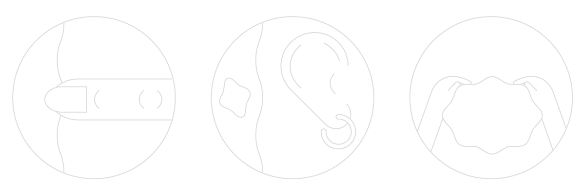
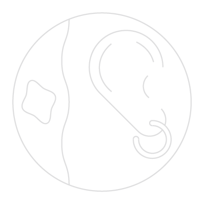

The senses are the border between the internal and external environment. Bodily awareness through our senses has to a large extent been forgotten in our busy lives. The shapes resemble sense organs, and are intended to echo the viewer’s own body, connecting viewer to object.


